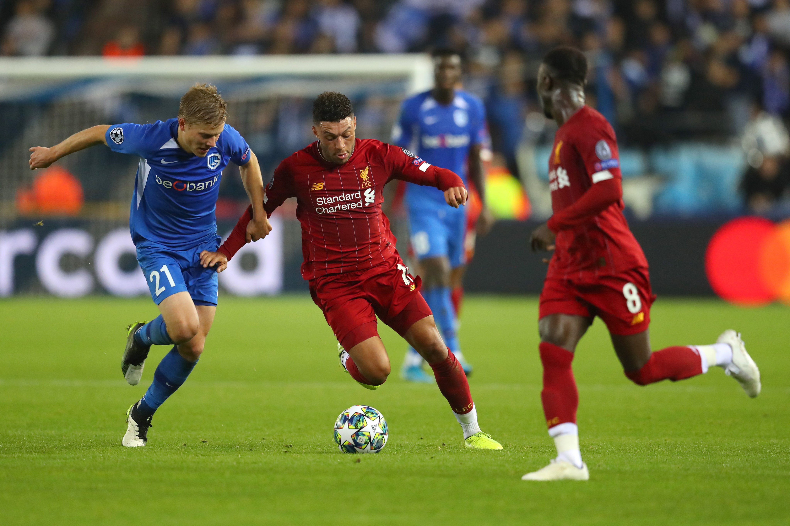

ФУТБОЛ
Футбо́л (англ. football от foot «ступня» + ball «мяч») — командный вид спорта, в котором целью является забить мяч в ворота соперника ногами или другими частями тела (кроме рук) большее количество раз, чем команда соперника. В настоящее время самый популярный и массовый вид спорта в мире. Игрок, играющий в эту игру — футболи́ст.
Соревнования по футболу, как и в любом другом виде спорта — важная составляющая игры. Соревнование организуется федерацией, для каждого турнира составляется регламент, в котором обычно определяют состав участников, схему турнира, правила определения победителя при равенстве очков и какие-то отклонения от правил, например количество замен. Соревнования делятся на внутренние и международные, которые в свою очередь разделяются на клубные и национальных сборных. Футбольные турниры собирают десятки тысяч зрителей на трибунах стадиона и многомиллионные аудитории по телевидению.